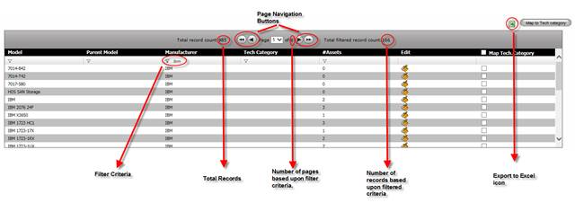
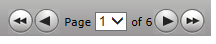
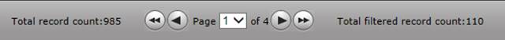
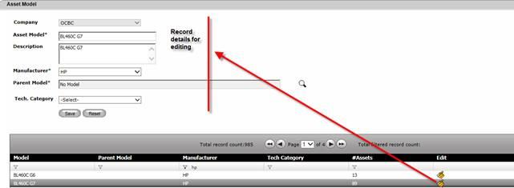
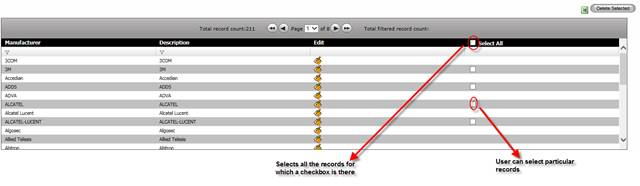

System shows multiple records in a grid-like structure for most of the information such as – all Master data (Site, Location, Manufacturer, and Asset Model etc.), Asset Search page, application etc. A typical grid like structure is shown below:

Figure 12: General Grid Structure
Please note the following for general grid structure:
1. If the result spans across multiple pages, then the page navigation buttons will be enabled as follows:

Where user can use this page navigation buttons to move to the first page, previous page, next page or last page. User can also specify a particular page number to go to that page.
2. User can export the result to excel spreadsheet by clicking the excel icon.
3. User can apply filter criteria on a specific column by clicking the Filter icon below the column. One can apply multiple filters.
4. On the top of the grid a total count and filtered count gets displayed.

5. On the grid row, there may be an Edit button – click this to edit the relevant fields of the record. Once clicked the record will be displayed in top for any change as below:

6. Depending on the type of the object and its dependencies on other objects, you may be able to delete the records – either one or multiple. In these cases, system displays a checkbox for that record in the grid as follows:

7. User can either click the to select all the records for which a checkbox is there or select individual record and then click the button to delete the selected record.
|
Copyright © 2019 Hewlett
Packard Enterprise,v5.2.
|